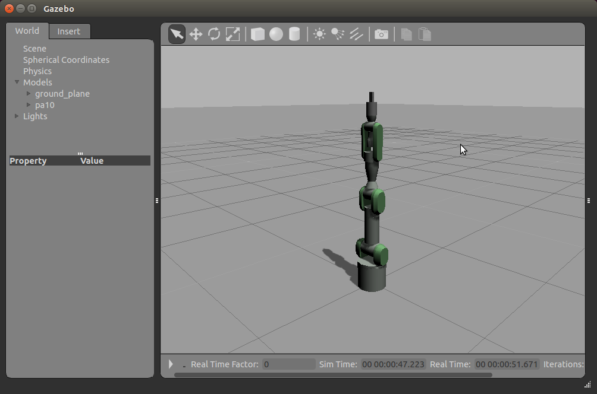

最初のシミュレーションの実行¶
hrpsys-gazebo-simulatorコマンド¶
hrpsys-gazebo-simulatorコマンドはシミュレータをロードし実行します。以下のように実行します:
$ hrpsys-gazebo-simulator [project file] [gazebo world file] [options]
プロジェクトファイル はシステムの設定を定義するXML形式のファイルです（あとで説明します）。 gazeboワールドファイル はシミュレーション世界を定義するXML形式のファイルです。
hrpsys-gazebo-simulatorコマンドには以下のオプションがあります:
-
-nodisplay¶ ヘッドレスモード
-
-realtime¶ 実時間への同期
-
-endless¶ エンドレスモード
-
-h--help¶ ヘルプを表示する
サンプルプロジェクトのロード¶
ロボットモデルを変換してシミュレーションワールドファイルを作成するために以下のコマンドを入力してください:
$ simtrans -i `pkg-config openhrp3.1 --variable=prefix`/share/OpenHRP-3.1/sample/model/PA10/pa10.main.wrl -o $HOME/.gazebo/models/pa10.world
プロジェクトファイルについてはhrpsys付属のサンプルをコピーします:
$ cp `pkg-config --variable=prefix hrpsys-base`/share/hrpsys/samples/PA10/PA10simulation.xml mysimulation.xml
シミュレーションを実行する前に、新しいターミナルを開いてroscoreサービスを実行してください:
$ roscore
hrpsys-gazebo-simulaorでプロジェクトとシミュレーションワールドを開きます:
$ hrpsys-gazebo-simulator mysimulation.xml $HOME/.gazebo/models/pa10.world -endless
シミュレーション画面の操作¶
シミュレーション画面はgazeboのものと全く同じです。
左クリックとドラッグ でシミュレーション世界を平行移動できます。
shiftキー + 左クリックとドラッグ でシミュレーション世界を回転させることができます。
